← الرئيسية
التشوير الطرقي (الجزء 2)
1

العلامة الطّّرقية تعني مسلك أو ممر خاص بالرّاجلين. (بالنسبة لعلامات الإجبار فهي أنواع على حسب الحالة، مثلا في هذه الحالة لا يمكن أن نقول أن العلامة الطّرقية تجبر الرّاجلين على المرور من هذا الممر فقط، لأن للرّاجلين لديهم الحق في المرور من أي طريق أو مسلك، لذلك هذه العلامة فهي تشير على أن الممر خاص بالرّاجلين وفي نفس الوقت فهي تشير على أن العربات أو الدراجات لا يمكنهم المرور في هذا الممر).
2
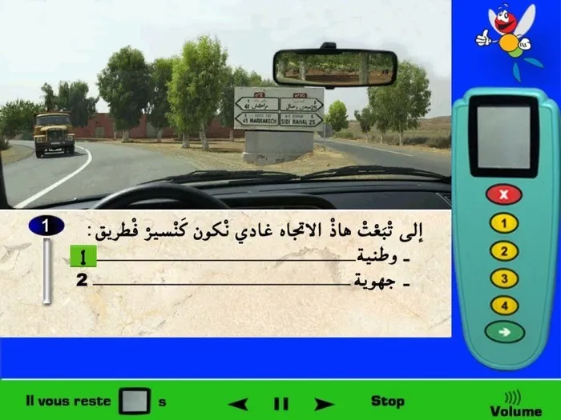
كما نلاحظ في الصورة فالإشارات الصغيرة فوق علامة الإتّجاه فهي باللون الأحمر واللون الأحمر يشير على أن الطّريق وطنية، لو كان اللون أصفر لقُلنا على أنها طريق جهوية، (اللون الأخضر طريق غابوية). إذن في هذه الحالة إذا قمت بإتّباع هذا الإتّجاه فسوف أكون أسير في طريق وطنية.
3
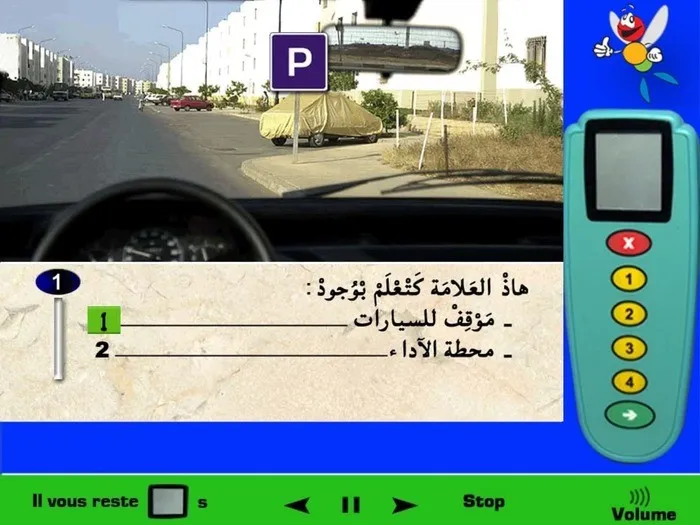
علامة الإرشاد P الظّاهرة في الصورة تعني موقف سيارات.
4
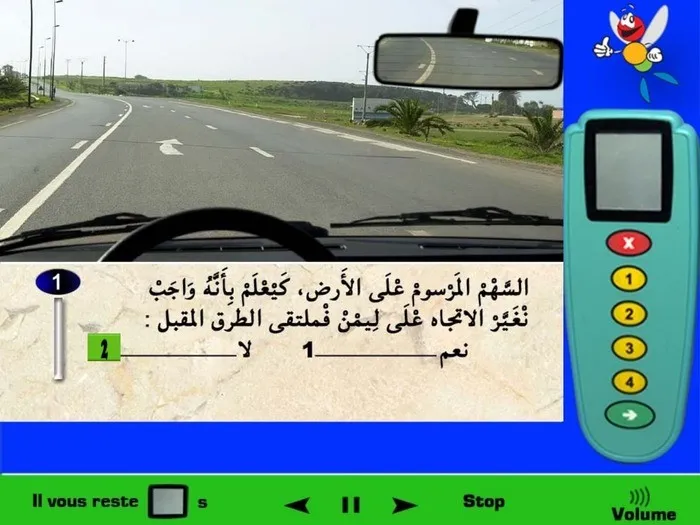
الأسهم المرسومة على الأرض فهي تعني أسهم الإنحياز وهي تشير في هذه الحالة أن أقوم بالإنحياز للمسلك الموجود على اليمين ولا تعني الإجبار لتغيير الإتّجاه لليمين في ملتقى الطّرق القادم (يوجد فرق بين أسهم الإجبار المرسومة على الأرض وأسهم الإنحياز، أسهم الإنحياز تجبرني فقط على الإنحياز للمسلك الذي تشير إليه الإسهم). إذن في هذه الحالة الأسهم المرسومة على الأرض لا تعلمني على تغيير الإتّجاه على اليمين في ملتقى الطّرق القادم.
5
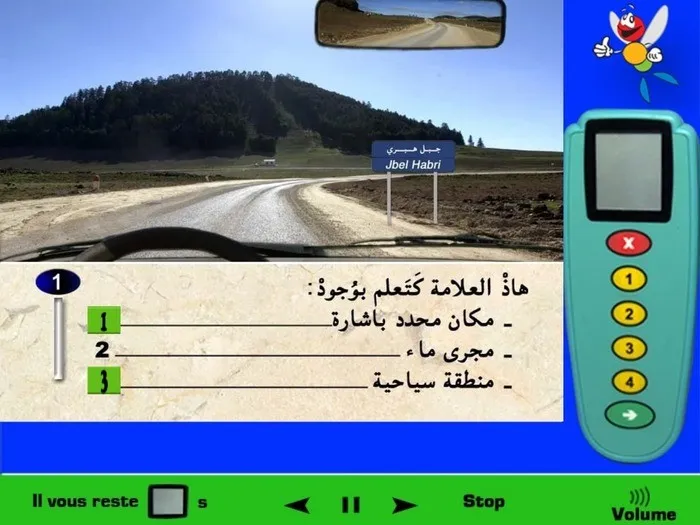
العلامة الطّّرقية مكتوب بها جبل هبري يعني مكان محدد بإشارة، وأيضا هذا المكان يعتبر منطقة سياحية. والعلامة الطّرقية لا تشير على أن المكان هو مجرى للماء. إذن في هذه الحالة هذه العلامة الطّرقية فهي تُعْلِمْ على وجود مكان محدد بإشارة وكذلك منطقة سياحية.
6
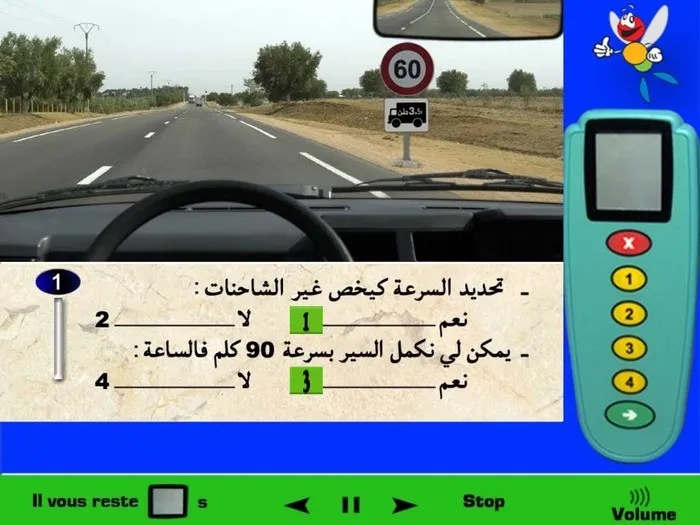
العلامة الطّرقية تعني تحديد السّرعة القصوى في 60 كلم في الساعة بالنسبة للشّاحنات التي يتعدى وزنها مع الحمولة 3,5 طن يعني تخّص الشّاحانت فقط. بما أنّها طريق وطنية فيمكنني السّير بسرعة قصوى 100 كلم في الساعة يعني يمكنني السّير بسرعة 90 كلم في الساعة.إذن في هذه الحالة تحديد السّرعة يخص الشّاحانت فقط ويمكنني أنا إكمال السّير بسرعة 90 كلم في الساعة.
7
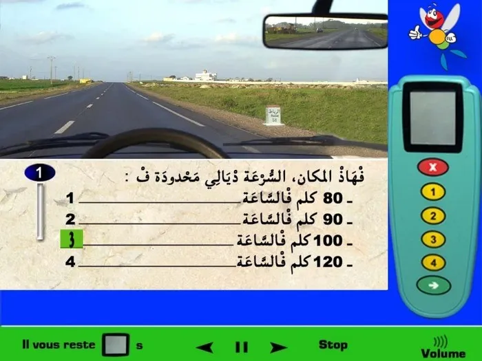
بما أنه لا يوجد علامة طرقية لتحديد السّرعة، إذن سوف أحدد نوعية الطّريق الذي أسير فيها هل هي طريق وطنية أم طريق سيّار، كما توضّح الصورة فإن الخطوط أقصى اليسار فهي متقطّعة وهي تعني أنها طريق وطنية، إذن بما أنها طريق وطنية فإن السرعة محدودة في 100 كلم في السّاعة.
8
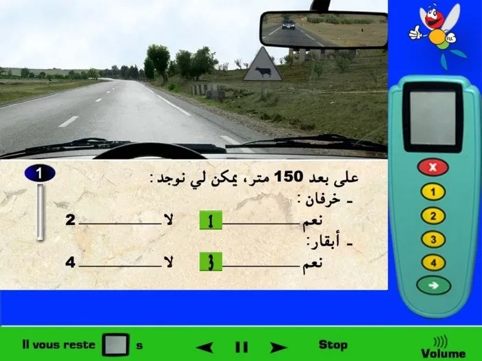
العلامة الطّرقية تعني إنتباه خطر وجود حيوانات أليفة (امثلا الخرفان، الأبقار، الخ تُعتبر حيوانات أليفة وليست مفترسة...) وبما أننا خارج التجمّع السّكني فإن علامات الخطر سوف يُطبّق على بعد 150 متر. إذن في هذه الحالة على بعد 150 متر يمكن أن أجد خرفان وأيظا أبقار.
9
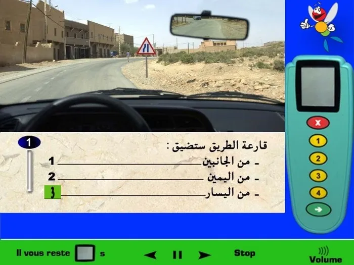
كما نلاحظ في العلامة الطّرقية فهي تحتوي على خطّين، خط مستقيم من اليمين وهو يشير عى أن الطّريق مستقيمة وخط غير مستقيم من اليسار وهو يشير على أن الجهة اليسرى من الطّريق هي التي سوف تضياق. إذن في هذه الحالة قارعة الطّريق سوف تضياق من اليسار.
10
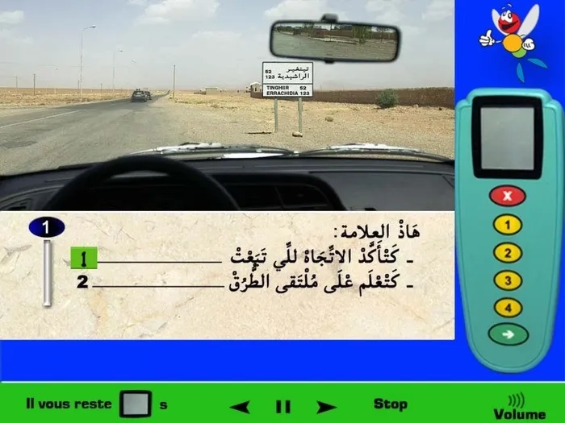
العلامة الطّرقية الظّاهرة في الصورة فهي علامة متقدّمة كما نلاحظ مكتوب بها تينغير و الراشيدية وقربهم المسافة المتبقّية لكي أصل إليهم، لكي أصل إلى تينغير بقيت لي مسافة 52 كلم ولكي أصل إلى الراشيدية بقيت لي مسافة 123 كلم، مثل هذا النّوع العلامات الطّرقية التي تكون بهذا الشكل فهي تشير إلى الوجهة التي تؤدي إليها هذه الطّريق ولا تشير إلى ملتقى الطّرق. إذن في هذه الحالة هذه العلامة تُأكد الإتّجاه الذي قمت بإتّباعه.
11
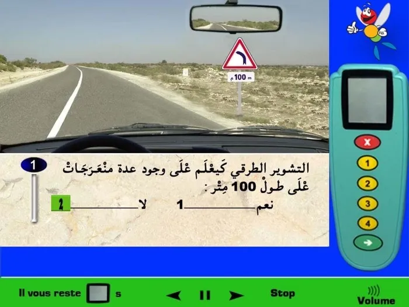
العلامة الطّرقية تعني إنتباه خطر منعرج على اليساروهي تعني وجود منعرج واحد فقط على اليسار وليس عدّة منعرجات. العلامة التّكميلية في الأسفل والتي تحتوي على 100 متر فهي تعني على أن هذا المنعرج سوف نجده بعد 100 متر ولا تعني على أن المنعرج يتواجد على طول 100 متر. إذن في هذه الحالة التشوير الطّرقي لا يُعْلِم على وجود عدّة منعرجات على طول 100 متر.
12
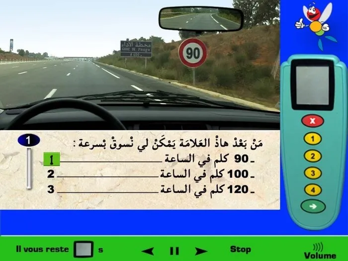
العلامة الطّرقية تعني تحديد السّرعة في 90 كلم في الساعة وتطبّق من عند العلامة، يعني على أنه لا يمكنني السّير بأكثر من 90 كلم في الساعة إبتداء من هذه العلامة الطّرقية. إذن في هذه الحالة من بعد هذه العلامة يمكنني السّير بسرعة 90 كلم في السّاعة.
13
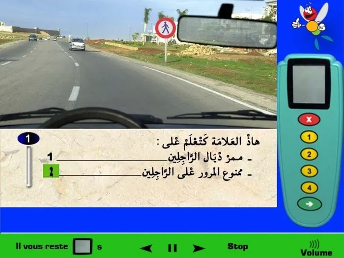
العلامة الطّرقية التي تكون بهذا الشّكل (دائرة مع لون أحمر) فهي تعني المنع، وفي هذه الحالة فهي تعني ممنوع المرور على الرّاجلين. إذن في هذه الحالة هذه العلامة تُعْلِم على منع مرور الرّاجلين.
14
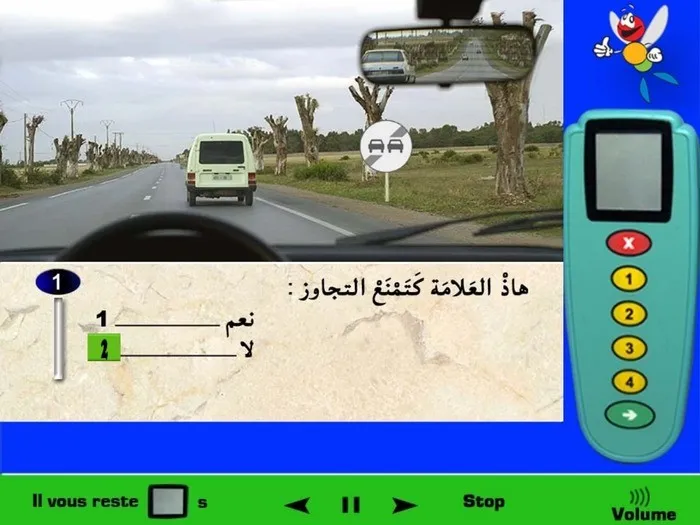
العلامة الطّرقية تعني إنتهاء منع التّجاوز الذي كان سابقا. يعني كان لديّ سابقا علامة ممنزع التّجاوز، والان لديّ هذه العلامة وهي تلغي علامة منع التّجاوز الظي طان سابقا وبالتالي تسمح لي بالتجاوز الان. إذن في هذه الحالة هذه العلامة الطّرقية لا تمنع التّجاوز بل تسمح بالتّجاوز.
15
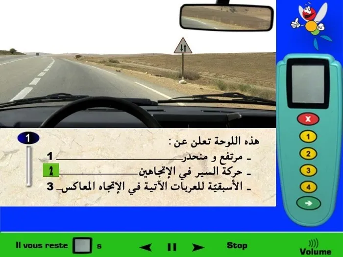
العلامة الطّرقية تعني انتباه حركة السير في الإتجاهين، يعني أنني سوف أصادف عربات قادمة من الإتّجاه المعاكس. إذن في هذه الحالة هذه العلامة تُعلم على حركة السّير في الإتّجاهين.
16
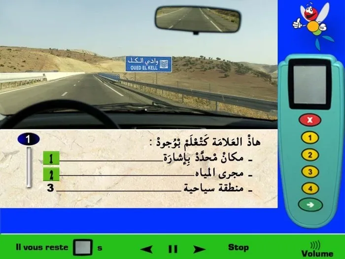
العلامة الطّّرقية مكتوب بها واد الكل وهو يعني مكان محدد بإشارة، وأيضا هذا المكان فهو مجرى للماء (واد).
17
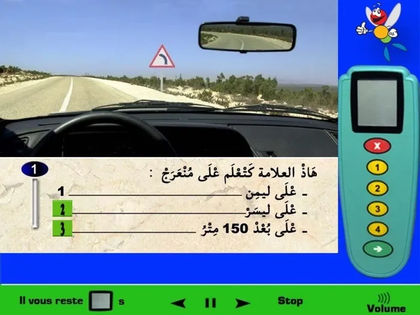
العلامة الطّرقية تعني إنتباه خطر منعرج على اليسار (كما تشير إليه العلامة الطّرقية) وبما أننا خرج التجمّع السّكني فسوف ونجد هذا المنعرج على بعد 150 متر من العلامة الطّرقية. إذن في هذه الحالة هذه العلامة تُعْلِم على على منعرج على اليسار و على بعد 150 متر.
18
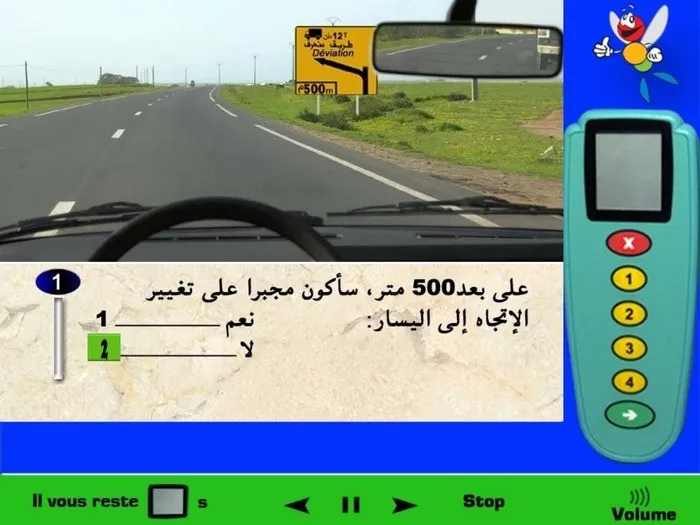
العلامة الطّرقية تشير إلى وجود طريق منحرف على بعد 500 متر، والعربات المعنيين بهذا الطّريق المنحرف والذين سوف يكونون مجبرين على تغيير الإتّجاه إلى اليسار هم العربات التي يصل وزنهم مع الحمولة إلى 12 طن كما توضّح العلامة الطّرقية.
19
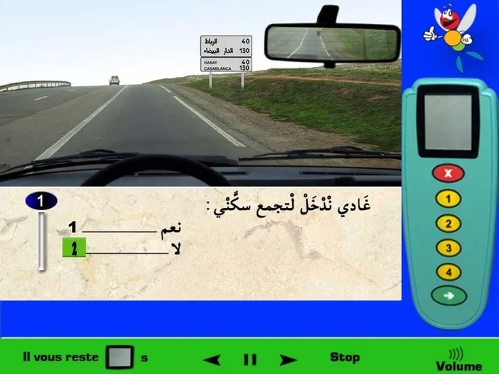
هذه علامة متقدّمة وهي تعني على أنه بقيت لي مسافة 40 كيلومتر لكي أصل إلى المجمّع السّكني الرباط، وبقيت لي مسافة 140 كيلومتر لكي أصل إلى المجمّع السّكني الدار البيضاء. إذن في هذه الحالة لن أدخل إلى المجمّع السّكني.
20
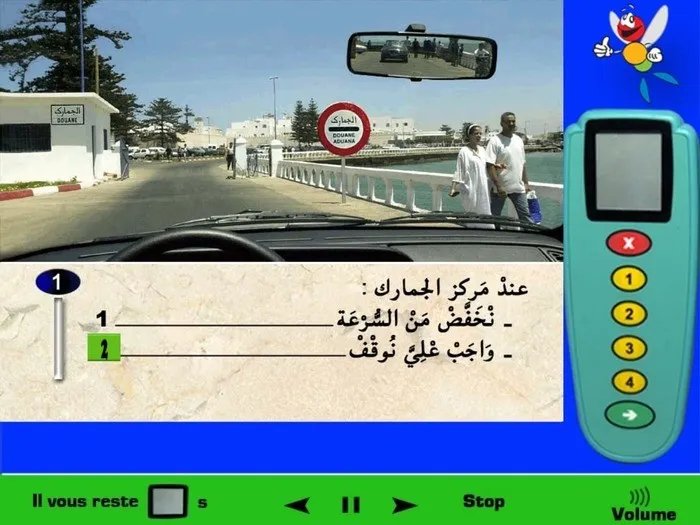
العلامة الطّرقية تعني وجود جمارك. عند الوصول إلى مكان يتواجد فيه الجمارك فمن الواجب عليّ الوقوف.
21
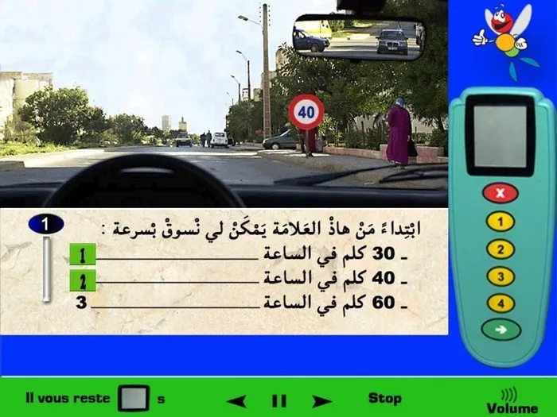
العلامة الطّرقية تعني تحديد السرعة في 40 كلم في الساعة، وهي تعني على أنه يمكنني السّير بأي سرعة أريد فقط لا أجاوز سرعة 40 كلم في الساعة. إذن في هذه الحالة يمكنني السّير بسرعة 30 كلم في الساعة ويمكنني أيضا السّير بسرعة 40 كلم في الساعة.
22
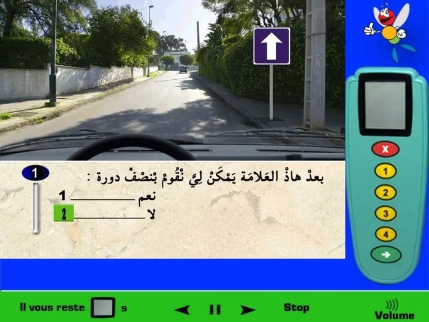
العلامة الطّّرقية تعني طريق ذات إتّجاه واحد، يعني أنه لا توجد سيّارات قادمة من الإتّجاه المعاكس، يعني لو قمت بعمل نصف دورة فسوف أتقابل مع عربات في الإتّجاه الذي كنت فيه سابقا وهذا ممنوع لأن الطّريق ذات إتّجاه واحد فقط. إذن في هذه الحالة و بعد هذه العلامة لا يمكنني القيام بنصف دورة.
23
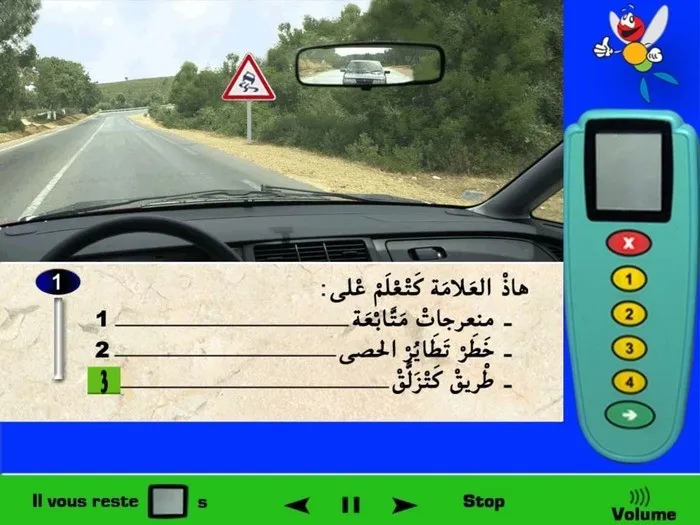
العلامة الطّرقية تعني إنتباه خطر طريق زلقة.
24
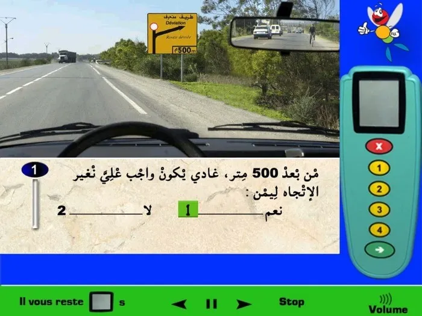
العلامة الطّرقية مكتوب بها على أن الطريق سوف يصبح منحرف على بعد 500 متر، العلامة الطّرقية الدائرية الخاصة بالمنع في المسلك على اليسار في العلامة الطّرقية فهي تعني على أن ذلك الطّريق لو قمت بسلكه والذّهاب مباشرة سوف يكون مسدود ولا يمكنني المرور فيه. يعني أنه واجب على جميع العربات أنها تأخد المسار المنحرف على اليمين لأن الطّريق مباشرة ممنوع فيها المرور بسبب الأشغال. إذن في هذه الحالة من بعد 500 متر سوف يكون من الواجب عليّ تغيير الإتّجاه
25
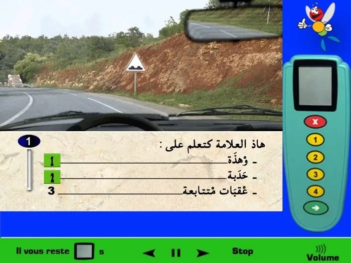
العلامة الطّرقية تعني إنتباه خطر وْهذَة أو حَذَبة.
26
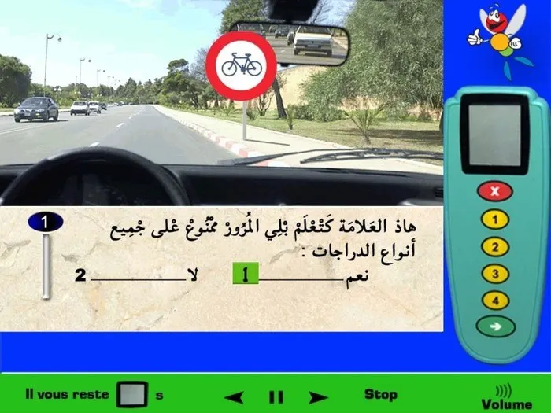
العلامة الطّرقية تعني ممنوع المرور على جميع أنواع الدّراجات (بما فيها الدّراجات العادية والدّراجات النارية).
27
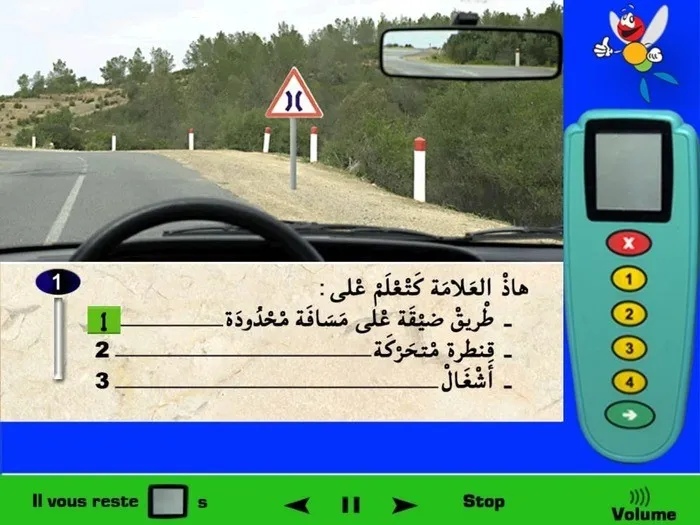
العلامة الطّرقية تعني إنتباه خطر طريق ضيّقة على مسافة محدودة (علامة الأشغال والقنطرة المتحركة علاماتهما ليست مثل هذه العلامة بل لديهم علاماتهم الخاصة). إذن في هذه الحالة هذه العلامة تُعْلِمْ على طريق ضيّقة على مسافة محدودة.
28
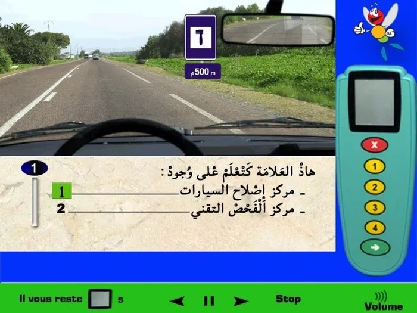
هذه العلامة الطّرقية التي تحتوي على هذا الرمز فهي تُعْلمْ على وجود مركز إصلاح السيارات.
29
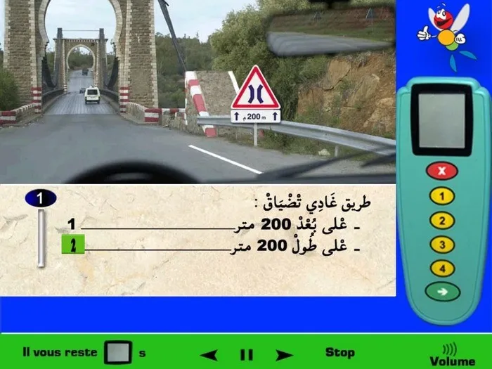
علامة إنتباه خطر طريق ضيّقة تحتوي على علامة تكميلية أسفلها مكتوب فيها 200 متر مع أسهم للأعلى، تلك الأسهم تعني على مسافة أو على إمتداد أو تعني كذلك على طول ولا تعني على بعد. إذن في هذه الحالة الطريق سوف تصبح ضيّقة على طول 200 متر.
30
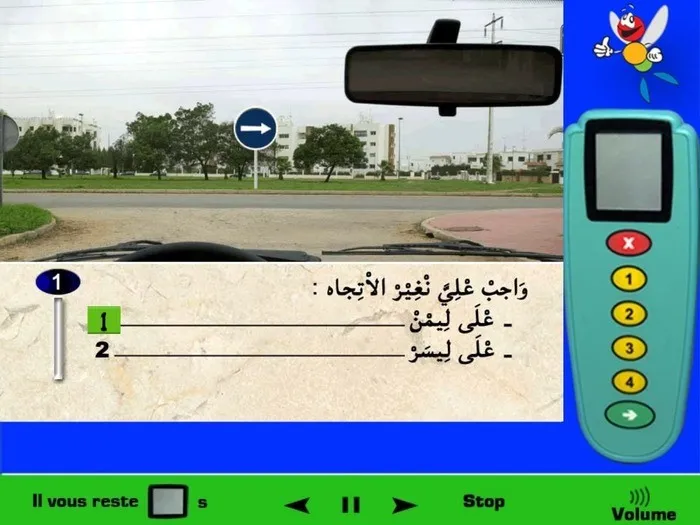
علامة الإجبار الظاهرة على الصورة تحتوي على سهم يتّجه إلى اليمين وهو يعني الإجبار للإنعطاف على اليمين. إذن من الواجب عليّ تغيير الإتّجاه إلى اليمين.
31
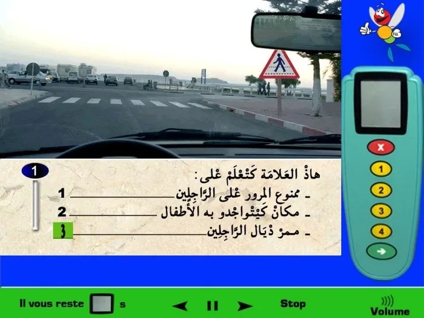
العلامة الطّرقية الظاهرة في الصورة تعني إنتباه خطر ممر الرّاجلين (العلامة الطّرقية الخاصة بالمنع تكون دائرية وليس داخل مثلث وبالنسبة لمكان يتواجد فيه الأطفال فهنالك علامة طرقية اخرى لذلك) إذن في هذه الحالة هذه العلامة تُعْلِمْ على ممر للرّاجلين.
32
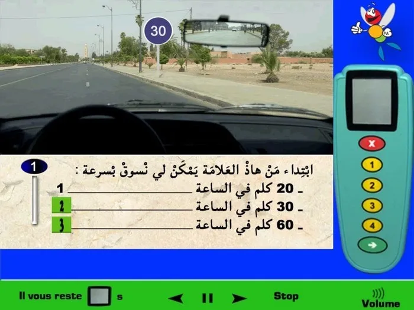
العلامة الطّرقية تعني السرعة الدنيا الإجبارية 30 كلم في الساعة وهي تعني أنه لا يمكنني السّير بسرعة أقل من 30 كلم في الساعة. بما أنني داخل المجال الحضري والسّرعة محددة في 60 كلم في الساعة إذن يمكنني السّير بسرعة 30 كلم في الساعة أو 40 كلم في الساعة او 50 كلم في الساعة أو 60 كلم في الساعة (فقط لا أسير بأقل من 30 كلم في الساعة ولا أسير بأكثر من 60 كلم في الساعة لأنني داخل المجال الحضري) إذن في هذه الحالة إبتداء من هذه العلامة يمكنني السّير بسرعة 30 كلم في الساعة و ب 60 كلم في الساعة.
33
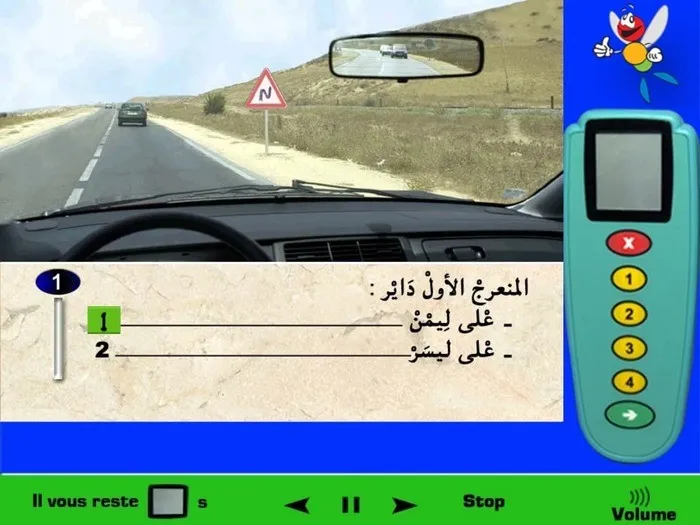
العلامة الطّرقية تعني انتباه خطر منعرجات، المنعرج الاول على اليمين و الثاني على اليسار. (لكي لا تتشتت(ي) في العلامة الخاصة بالمنعرجات المتتالية نلاحظ فقط في أي جهة ينعطف المسار، كما نلاحظ في العلامة الإنعطاف الأول على اليمين إذن المنعرج الأول سوف يكون على اليمين).
34
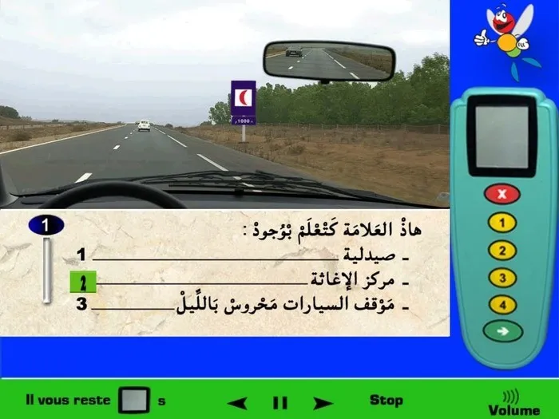
العلامة الطّرقية الخاصة بالإرشاد تعني أنه على بعد 1000 متر سوف نجد مركز للإغاثة.
35
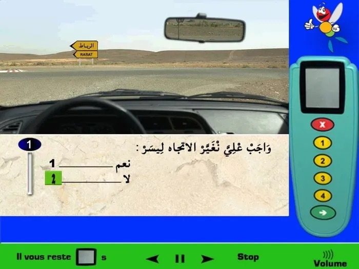
العلامة الطّرقية الصفراء فهي علامة مؤقّتة وهي تُعلموني على أن الطّريق تؤدي للرباط فهي على اليسار، العلامة فقط تُعلمني على أن طريق الرباط على اليسار ولا تجبرني للإنعطاف على اليسار، ويمكنني الإنعطاف على اليمين. إذن في هذه الحالة ليس من الواجب عليّ تغيير الإتّجاه على اليسار.
36
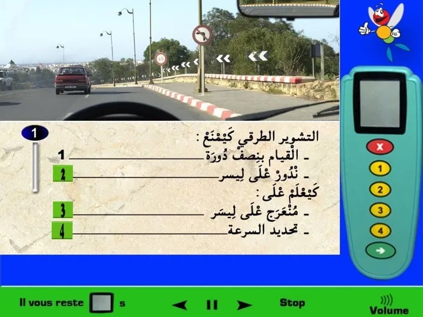
لا يوجد تشوير طرقي يُعلم على أنه ممنوع القيام بنصف دورة، يوجد تشوير طرقي عمودي ممنزع الإنعطاف على اليسار، أيظا أقصى اليمين يوجد التّشوير الطّرقي الذي يشير إلى أن هنالك منعرج على اليسار و يوجد تشوير طرقي عمودي في الأمامي يشير إلى تحديد السّرعة في 40 كلم في الساعة. إذن التّشوير التطّرقي يمنع الإنعطاف على اليسار ويُعْلِمْ التشوير الطّرقي على منعرج على اليار وكذلك تحديد السّرعة في 40 كلم في الساعة.
37
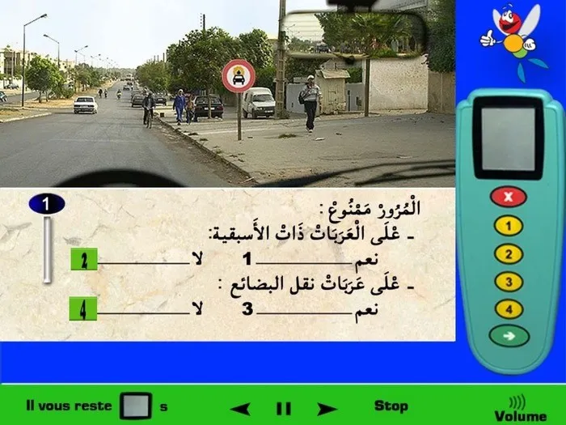
العلامة الطّرقية الظاهرة في الصورة فهي لا تعني ممنوع مرور العربات ذات الأسبقية ولا تعني كذلك ممنوع مرور عربات نقل البضائع، العلامة الطّرقية تعني ممنوع مرور العربات التي تحمل متفجّرات.
38
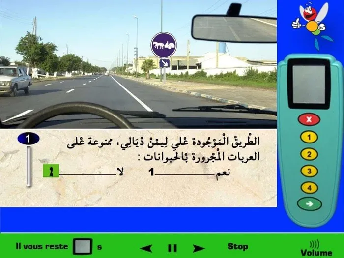
الطّريق الموجودة على أقصى اليمين فهي خاصة بالعربات المجرورة بالحيوانات وليست ممنوعة عليها كما توضّح العلامة الطّرقية، بل إن السيارات أو الشاحنات أو حتى الدّراجات فهم ممنوعين بالسير في ذالك المسلك. إذن في هذه الحالة الطّريق الموجودة على اليمين ليست ممنوعة على العربات المجرورة بالحيوانات.
39
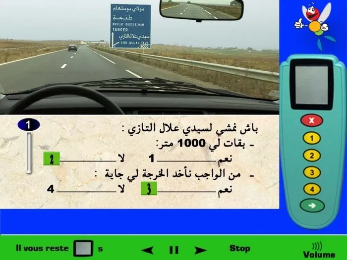
العلامة الطّّرقية مكتوب فيها 1000 متر وهو يعني المسافة المتبقّية لي لكي أصل إلى المخرج المؤدي بعد ذلك إلى طريق سيدي علال التازي (يعني المسافة هنا خاصة بالمخرج وليس بسيدي علال التازي). وبطبيعة الحال يجب علي أخد المخرج القادم لكي أذهب إلى سيدي علال التازي لأنه إذا لم أقم بذلك فسوف أذهب مباشرة إلى مولاي بوسلهام وإلى طنجة كما تشير إليه العلامة الطّرقية.
40
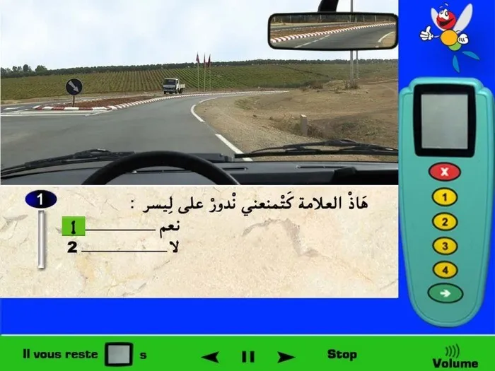
العلامة الطّرقية تعني الإجبار للجهة اليمنى، بما العلامة الطّرقية تجبرني على السّير على اليمين إذن فهي تمنعي لكي أنعطف على اليسار. إذن في هذه الحالة هذه العلامة الطّرقية تمنعني لكي أنعطف على اليسار.
41
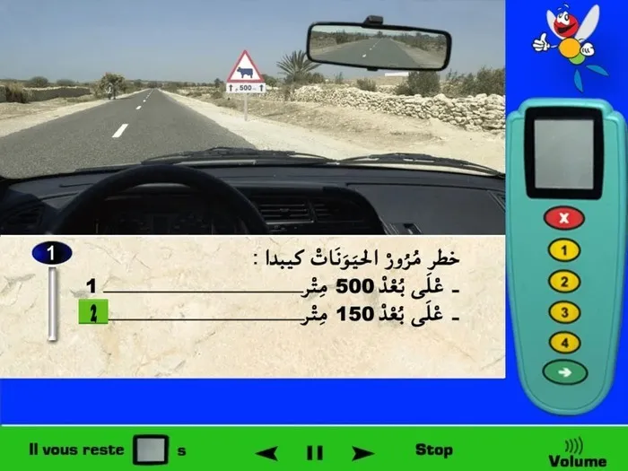
العلامة الطّرقية تعني إنتباه خطر مرور الحيوانات. توجد علامة تكميلية تحتها وهي تحتوي على معلومتين، أوّل معلومة هي الأسهم وثاني معلومة هي الرّقم 500 متر. بالنسبة لشكل الأسهم فهو يعني الإمتداد أو على طول أو على مسافة (والمسافة مكتوبة وهي 500 متر) يعني معنى العلامة التّكميلية هو على طول 500 متر أو يمكننا القول على مسافة 500 متر او يمكننا القول على إمتداد 500 متر وليس على بعد. خلاصة: هذه العلامة الطّرقية تعني إنتباه خطر مرور الحيوانات على بعد 150 متر (بما أننّا خارج التجمّع الحضري) ويمتد على مسافة 500 متر هذا الخطر.
42
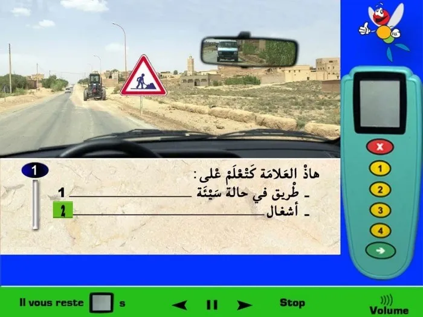
العلامة الطّرقية تشير إلى وجود أشغال على الطّريق وليس أن الطّريق في حالة سيئّة.
43
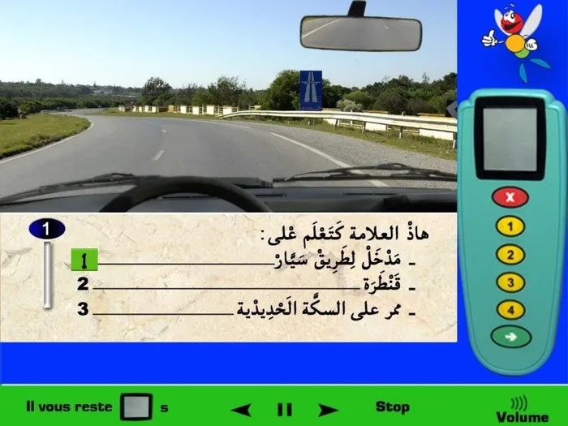
العلامة الطّرقية تسمى بداية الطّريق السيّار أو مدخل الطّريق السيّار، إذن في هذه الحالة هذه العلامة تُعِلمْ على مدخل لطريق سيار.
44
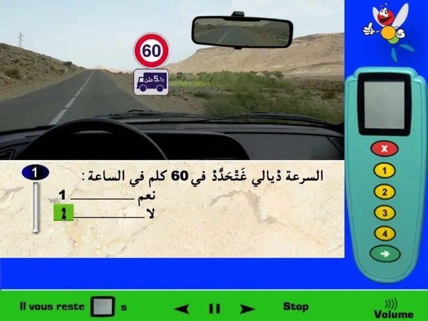
العلامة الطّرقية تعني تحديد السّرعة القصوى في 60 كلم في الساعة بالنسبة للشّاحنات التي يتعدى وزنها مع الحمولة 5,5 طن يعني تخّص الشّاحانت فقط. بما أن العلامة الطّرقية لا تعنيني فأنا غير مجبر بالسّير بسرعة قصوى 60 كلم في الساعة. إذن في هذه الحالة سرعتي لا تتحدد في 60 كلم في الساعة. (بما أنني في طريق وطنية فسرعتي محددة في 100 كلم في الساعة).
45
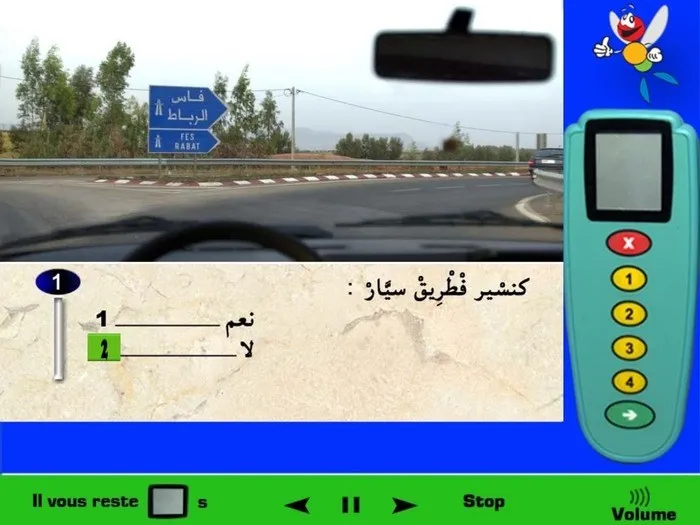
العلامة الطّرقية الموجودة على اليسار فهي تشير على أنه لو قمت بإتّباع تلك الطّريق على اليمين فسوف أقوم بالتّوجه إلى الطّريق السيّار أمّا الان فأنا لا أتواجد في الطّريق السيّار. إذن في هذه الحالة أنا لا أسير في طريق سيّار.
46
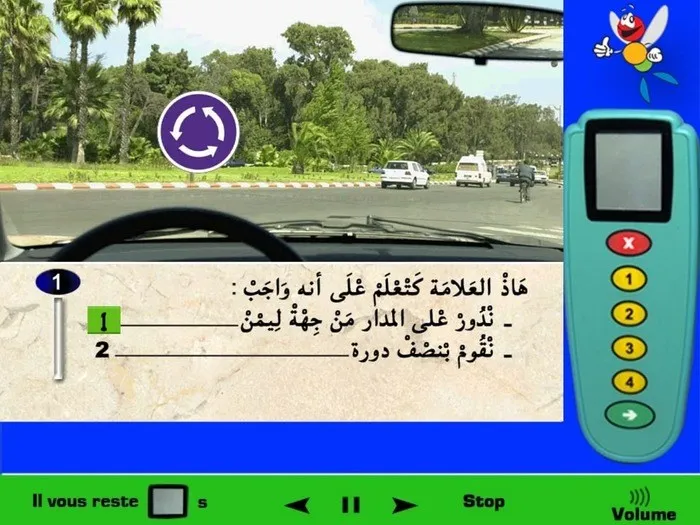
العلامة الطّرقية تشير إلى وجود مدار، أثناء وجودنا في المدار فمن الواجب علينا عند الوصول إليه أن نسير على الجهة اليمنى لكي نكمل السيّر حوله وليس الإنعطاف مباشرة على اليسار أي أن أقوم بنصف دورة وأنعطف على اليسار عند الوصول إليه.
47
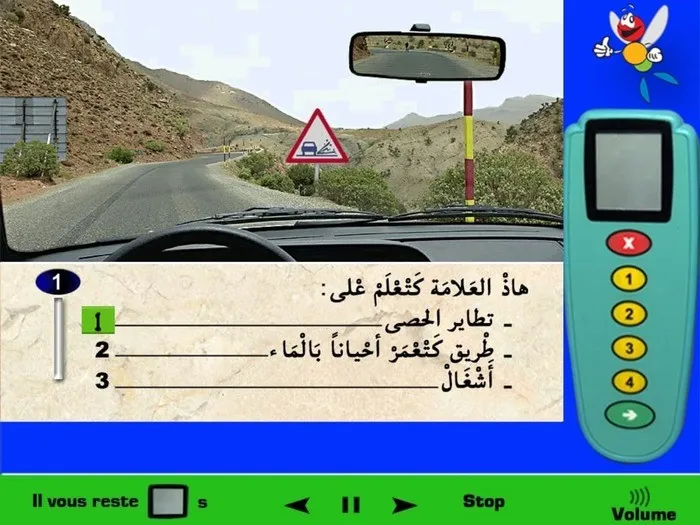
الإشارة الطّرقية فهي تعني إنتباه خطر تطاير الحصى. (العلامة الطّرقية لا تعني طريق تحتوي أحيانا على الماء ولا تعني الأشغال).
48
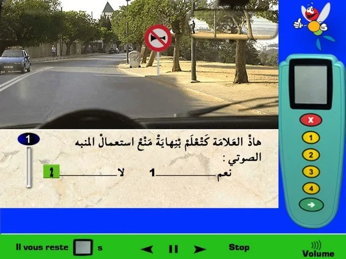
العلامة الطّرقية تعني ممنوع إستعمال المنبه الصوتي وليس إنتهاء منع إستعمال المنبّه الصوتي. إذن في هذه الحالة العلامة الطّرقية لا تُعلم على نهاية منع إستعمال المنبّه الصوتي.
49
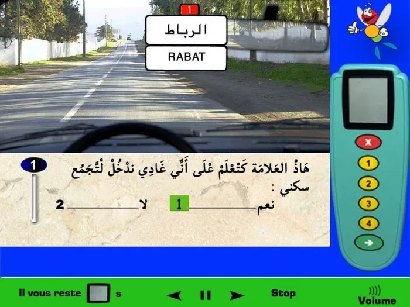
عندما أجد علامة طرقية مثل التي تظهر في الصورة بدون رقم الكيلومترات فهذا يعني على أنني قد وصلت إلى تجمّع سكني، في حالة أخرى إذا وجدت علامة طرقية مثل التي في الصورة وفيها عدد الكيلومترات مثلا 20 كيلومتر فهذا يعني انه بقيت لي 20 كيلومتر لكي أصل إلى التجمّع السكني. الان لا يظهر أي رقم في العلامة الطّرقية إذن في هذه الحالة هذه العلامة الطّرقية تعلم على أنني سوف أدخل إلى مجمّع سكني الرباط.
50
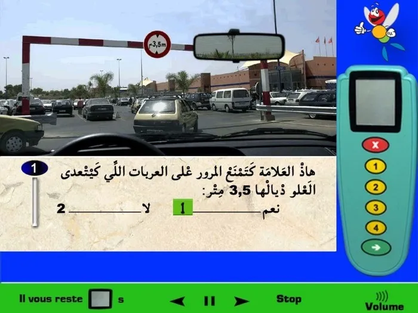
العلامة الطّرقية تمنع مرور العربات التي يتجاوز علوّها 3,5 متر (كما توضّح أسهل العلو في العلامة الطّرقية)، العربات التي علوّها 3,5 متر يمكنها المرور لكن التي علوّها أكثر من 3,5 متر لا يمكنها المرور مثلا علو 3,6 متر أو 4 متر لا يمكنها المرور.
51
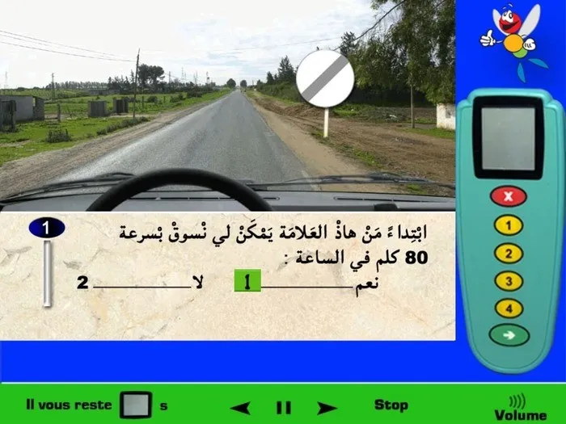
العلامة الطّرقية تعني إنتهاء جميع أنواع المنع التي كانت سابقا (بإستثناء علامات الوقوف والتوقّف لا تقوم بإلغائهم) بما أنني خارج التجمّع الحضري والسرعة محددة في 100 كلم في الساعة إذن يمكنني السّير بأي سرعة فقط لا أتجاوز سرعة 100 كلم في الساعة. إذن في هذه الحالة إبتداء من هذه العلامة يمكنني السّير بسرعة 80 كلم في الساعة.
52
العلامة الطّرقية تعني انتباه خطر منعرجات، المنعرج الاول على اليسار و الثاني على اليمين. (لكي لا تتشتت(ي) في العلامة الخاصة بالمنعرجات المتتالية نلاحظ فقط في أي جهة ينعطف المسار، كما نلاحظ في العلامة الإنعطاف الأول على اليسار إذن المنعرج الأول سوف يكون على اليسار).
53
العلامة الطّرقية تحتوي على رمز الطّريق السيّار مع خط أحمر، الخط الأحمر يعني إنتهاء الطّريق السيّار. إذن في هذه الحالة العلامة تُعْلِمْ على نهاية الطّريق السيّار.